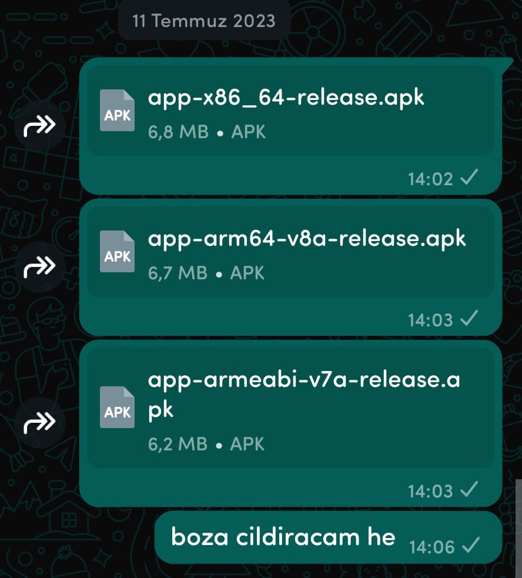

🌺 İlk Fotomuz
Gerçek olmasa da ilk fotomuz Allah gerçeklerini de nasip etsin

🌺 2023..
23'te sana özel telefon uygulaması yapmaya çalışmışım doğum gününde becerememişim tabi

🌺 Sahil Yürüyüşü
Belki gerçek değil şimdilik ama ben yaşanacağına inanıyorum baba